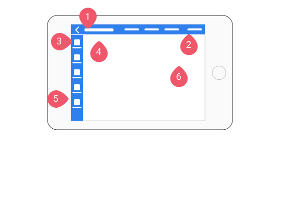

Aim of the Presentation
To answer the following questions;
- What are we trying to achieve with BootstrapVue Toolkit
- What is our approach to additional Components needed in the Toolkit?
- The importance of keeping the code and Figma in sync
- Analysis of the current Components from a UX Patterns point of view
- What our approach is building our own bespoke Components
- What is BEM
- Approach to theming
- Issues with the markup as is - .rows x 2 etc.
- Form markup
- Form markup
- Approach to navigation on a deep info hierarchy
Aim of BootstrapVue Toolkit
The aim of this project is to see how far we can get by using disciplined Componentisation leveraging BootstrapVue as the basis of a toolkit to develop new projects.
Entropy
One of the chief tasks is to prevent the degradation of the toolkit through the general contributions of work to the codebase (basically prevention of Entropy)
Approach 2 Additional Components
So we should only be adding in additional Components where they are needed and where we do we should have a clear and defined usage case.
Through Plugins
So it important we ask questions like - is the addition of Sweet Alert plugin
- good?
- or bad?
Or Through the creation of our own
Component Clarity of Purpose
At the very least we should be clear;
- what a Component is
- what it is for
- what it isn't for
Re-useability
Its all well and good building a system which does something but if it isn't useful for re-use its completely useless.
Each UI Component (as in tangible UI element) needs to exist in both Figma and in the Code
Analyse BootstrapVue Components
We need to document from a UX Patterns point of view, what Patterns the Components in BootstrapVue should support and why these fall short (or not) and justify the use of a new Component like Sweet Alert.
BootstrapVue Alert
Provide contextual feedback messages for typical user actions with the handful of available and flexible alert messages.
TMAC: Dismissable but inline. Suitable for forms.
BootstrapVue Toast
Push notifications to your visitors with a toast, a lightweight and easily customizable alert message.
TMAC: Timed and dismissable.
BootstrapVue Modal
Modals are streamlined, but flexible dialog prompts. They support a number of use cases from user notification to completely custom content and feature a handful of helpful sub-components, sizes, variants, accessibility, and more.
TMAC: As a Warning this is disruptive, it prevents further progress until it is addressed, so isn't suitable for general feedback. As a 'Modal' paradigm for creating and navigating content it is like a single layer of Material Design 'Material'.
V Sweet alert
A beautiful replacement for warning modals + success, error messages.
TMAC: These are Modal in nature.
TBC
Bespoke Components
In the current system we have a bespoke Component (UI anyway) with a class .patient-data
- It doesn't exist as a Figma Component
- Its not necessarily about a Patient
- And if it was it isn't for the Data, its primarily for Navigation - what am I looking at - ie Context)
- Its not Modular - the styling of the Component exists on the level of the Layout .row, which means the concerns aren't separated and removal of the Context would break the layout
- Its not Modular - in the sense that the presence of the 2nd Hamburger menu should be designed to work alongside but not be dependant on the .context Component
Component (class) Naming
We need a Convention (BEM) for naming the Components, so we give hints about how elements interrelate
- .patient-data = BAD
- .context AND .context--patient = BETTER
BEM
<div class="media media--right"> <div class="media__img"> <img src="cats.gif" alt="" /> </div> <div class="media__body"> Now you've got a hint that I belong to the media block when reading HTML </div> </div>
Component re-using
BUT notwithstanding that we need to target Context as a unique javascript Component (#context ?)
before we go too far down the road of developing an anatomy for .context > .context__title and .context__body etc.
we should consider re-using exisitng Components like Card
Card for Context Component
Patrick Murphy
Disease Type blah blah
Some quick example text to bulk of the context's content.
Here
Things to consider
- Making use of BootstrapVue to deliver flexibility & consistancy
- Keeping the Form Acesssible
- Read mode - does it make sense to use just use 'readonly'
- If not what would the elements + classes be
Markup as is
- h5
- p
This is straightforward but makes any other layout impossible. Also why h5? It untethers the size/font/style of the label text from the main font size, without bringing any Semantic/Accessibility advantage. H and P should probably contrast by default.
If this approach was to be pursued it would be better to use modifiers of the tag
Not pairing on the same line is extremely restrictive spacewise and may be a mistake
Option 1: Accessible Readonly Forms (as in really)
The problem with read-only text and accessibility arises from the the way the screen readers interact with forms in Web pages.
If you use an unattached form label, or an element that is not inside a form, the browser won't see it. But when a screen reader encounters a form it switches into “forms mode.” In this mode the screen reader will only read the form input elements and any corresponding labels. If additional plain text is inserted between two form elements, the screen reader will skip over the plain text and go directly to the next form input field.
So the right way to go is to use form elements.
Option 2: Use modifed P tags or DL tag
These need to be relateable through a screen reader.
Downside is that the BS Vue Form layout will be lost to us.
Markup as should be
Context banner
What are we talking about?
Navigation
Navigation - Which should tell us 3 things.
- Where am I?
- Where else can I go?
- What will I find when I get there?
BootstrapVue Example
Not the cleanest implementation but;
- Top Nav says I'm at 'Components'
- Side Nav says I'm at 'Badge' which is under 'Components'
- Title says I'm at 'Badges'
- Breadcrumbs says I'm at 'Badges' which is under 'Components' which are under 'Docs' which is 1st level under the top level 'Home'
Useful take aways
- The main content area of a page/view should have a title
- Navs should reflect the choices made to get where you are
- Some Nav can be contextual - the Components only display in Side Nav when the User clicks to go to the Components in the Top Nav
- Breadcrumbs can be extremely useful but as they inform users of their location in relation to the entire sites hierarchy, they expose/enforce a hierarchy when we might may not always want to do so. Top Nav has links 'Doc' and 'Components' - Breadcrumbs shows that one is child of the other in the hierarchy whether we want it to or not
- There can be only one hierarchy in a Breadcrumb. What if we want to filter/scope in a non hierarchical way or support more than 1 hierarchy (for example years v countries)?
- When there is room to do so the Patterns above are all useful
Why use a Context Component
- Filtering along non hierarchical scope which doesn't fit with a Breadcrumb
- With a deep hierarchy (or smaller) the page becomes overwhelmed with Navigation - the Context makes the scope (you're not longer looking at the entire system) transparent while allowing the other Navigation Components to be dropped off the UI
Order of priority
- 0 Main page content
- 6 Main page Context (in and out of Modals)
- 1 Application Title
- 3 Secondary Context xxx
- 5 Navigation for the specific
- 2 Navigation for the general
- 4 Breadcrumbs - hierarchical context
Order of priority

Desktop
- Content
- Context Banner - Where am I?
- Application Title - Where am I?
- Context - Where am I?
- Primary Navigation (based on Context) - Where can I go?
- Secondary Navigation - Where can I go?
- Breadcrumbs - Where am I?
Approaches to Navigation
Where we need to scale our navigation options we should probably use Primary and Secondary navigation menus, where the Secondary isn't necessarily always visable. This will allow us to balance the need between having as much transparency as possible, without surrendering all our screen space to the navigation.
Primary & Secondary Navs
An example of this approach is the way in which Apple and Google introduced Tab menus on their mobile interfaces creating a small but Primary navigation which is always in view on Non Modal Screens.
Other navigation options are found on the Secondary nav menu accessed through the hamburger menu.
Extent of Navs options
The functionality/links available must be tailored for the device the design is intended to support
So on a smaller Desktop/Tablet view a reasonable in between stage would seem to be where a Primary side menu reduces in size and appears as icons (Wordpress, Gitlab etc.)
Collapseable Primary Menu

Collapseable Secondary Menu

Desktop
- Application Title - Where am I?
- Secondary Menu - Where can I go?
- Context - Where am I?
- Breadcrumbs - Where am I?
- Primary Menu (based on Context) - Where can I go?
- Context Banner - Where am I?
Wide Tablet
Mobile

- Application Title - Where am I?
- Secondary Menu - Where can I go?
- Primary Menu (based on Context) - Where can I go?